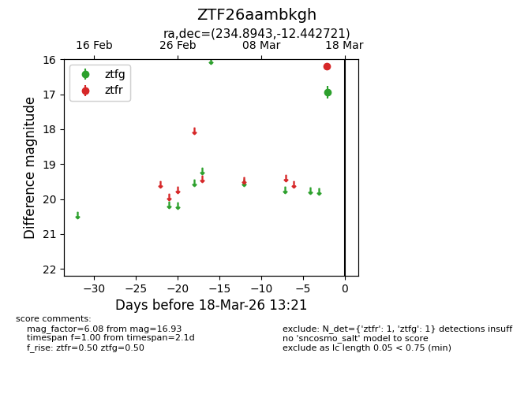
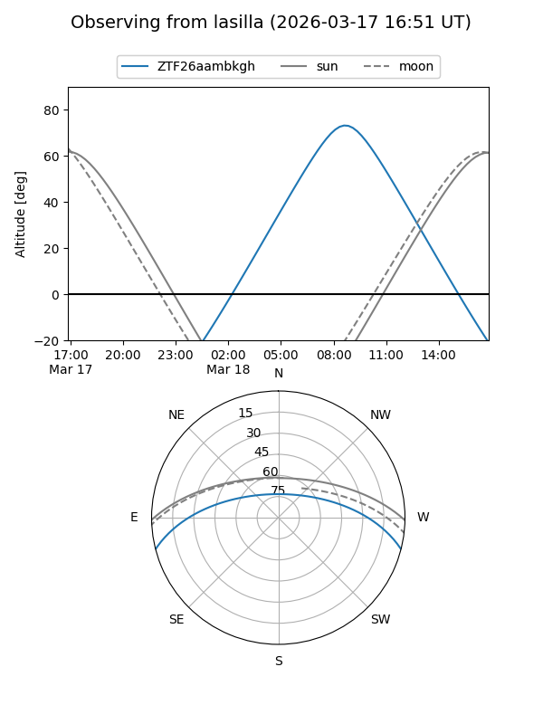
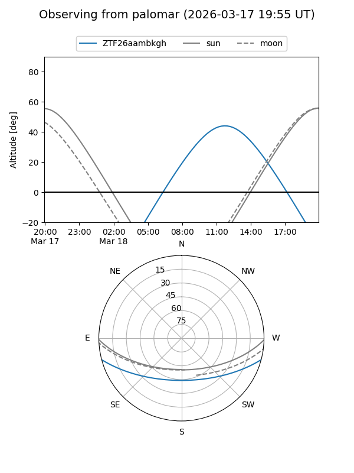

ZTF26aambkgh
Target ZTF26aambkgh at 2026-03-18 13:23
Aliases and brokers:
FINK: link
Lasair: link
ALeRCE: link
alt names
ZTF26aambkgh (ztf,fink_ztf)
Coordinates:
equatorial (ra, dec) = 234.8943,-12.44272
equatorial (HMS+DMS) = 15:39:34.63,-12:26:33.79
galactic (l, b) = (354.3043,+33.17883)
Flags:
Photometry:
last ztfg=16.93, ztfr=16.19
1 ztfg, 1 ztfr detections
Lightcurve

Visibility


Additional plots